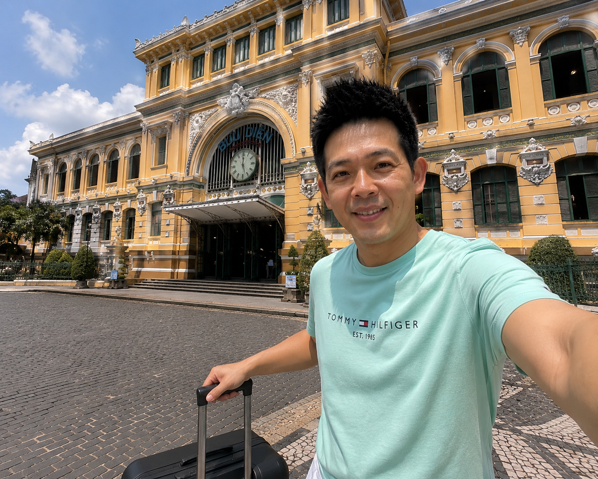

💡 實戰攻略精華
越南中部城市峴港（Da Nang）近年來成為台灣旅客的新寵，不僅因為有越南最優質的海灘，更因為豐富的歷史文化與自然景觀。這篇3天2夜攻略幫你把峴港最好玩的全部收錄。

峴港基本資訊
簽證：台灣護照可享落地簽（機場填表，費用約US$25），或提前申請電子落地簽（E-Visa）更方便。
時差：比台灣慢1小時（GMT+7）
匯率：1台幣≈580越南盾（VND），消費極低，一碗河粉約₫50,000-80,000（NT$86-138）
最佳旅遊時間：2-5月天氣最穩定，6-9月為雨季但人少
Day 1：巴拿山（Ba Na Hills）

世界最長單線纜車
乘坐全球最長的單線纜車（5,801公尺），直達海拔1,487公尺的巴拿山。纜車票含園區門票約₫750,000（NT$1,293），建議提前在Klook購買享優惠。
必玩：法國村（復古建築適合拍照）、巨人橋（Golden Bridge，巨大雙手托橋超震撼）、室內遊樂園（免費玩各種設施）。建議09:00抵達，遊玩5-6小時。
Day 2：美溪海灘＋龍橋
早晨：美溪海灘（My Khe Beach）看日出，沙灘乾淨、海水清澈，建議租沙灘傘₫100,000/半天。
下午：五行山（Marble Mountains）登高看夕陽，有電梯直達山頂（門票₫150,000）。
晚上：龍橋（Dragon Bridge）看周六21:00火龍噴水表演（約15分鐘），附近夜市吃海鮮燒烤。
Day 3：會安古鎮一日遊
距離：峴港到會安約40分鐘車程，包車來回₫800,000（NT$1,379）或搭乘公車₫120,000/人。
必逛：日本廊橋、會安古城廣場。夜市燈籠街非常浪漫。
必吃：會安高樓麵（Cao Lau）₫40,000、白玫瑰（Banh Vac）₫30,000。
預算參考（3天2夜）
總預算約 NT$8,000-15,000（不含機票）
機票來回NT$5,000-8,000｜住宿（海景飯店）₫1,500,000/2晚｜餐費₫1,500,000｜門票與交通₫1,200,000